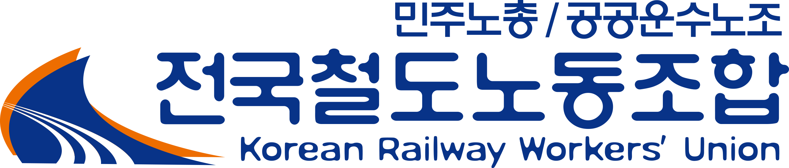

EMU 도입 관련 정원·숙소·교육 문제
T/F 준비신차종 도입에 따른 검수체계, 정원, 교육훈련, 숙소·후생복지 요구를 통합 관리하는 안건입니다.

현장광장 · 웹진 · 노사/산보위 진행판
웹진은 공식 논리로, 익명광장은 현장 목소리로, 진행판은 노사·산보위 안건의 흐름으로 운영하는 모바일 중심 지부 사이트 시안입니다.
신차종 도입에 따른 검수체계, 정원, 교육훈련, 숙소·후생복지 요구를 통합 관리하는 안건입니다.
하절기 작업환경과 환풍시설, 휴식권 보장 문제를 노사협의 및 산보위 안건으로 연계합니다.
기술의 변화는 차량만 바꾸지 않는다. 노동의 기준과 책임의 무게까지 바꾼다.
시안용 비밀번호는 gy2026 입니다. 실제 운영 시 월별 공용 비밀번호로 변경합니다.
정원, 교육훈련, 검수체계, 숙소·후생복지시설, 보수품·시험장비 확보를 묶어 관리합니다.
작업환경 변화, 반복작업, 중량물 취급, 신차종 도입 영향을 함께 검토할 필요가 있습니다.
교대인력 증가와 정비물량 확대에 따른 생활조건 개선 요구입니다.
공식 기사·기획·성명은 웹진에 보관하고, 의견은 기사별 토론방으로 연결합니다.
읽을 사람은 길게 읽고, 안 읽는 사람도 핵심만 확인할 수 있도록 구성합니다.
이 공간은 조합원과 현장 구성원의 자유로운 의견 제시를 위한 익명 공간입니다.
운영자가 모든 글을 읽지 않도록, 위험글만 검토 대기함으로 보낸다는 설계입니다.
자동판정: 실명·개인공격 의심
추천조치: 임시 블라인드 후 운영자 2인 검토
요약: 특정 직책자의 업무처리를 강하게 비판하는 글. 개인 식별 가능성이 있어 검토 필요.